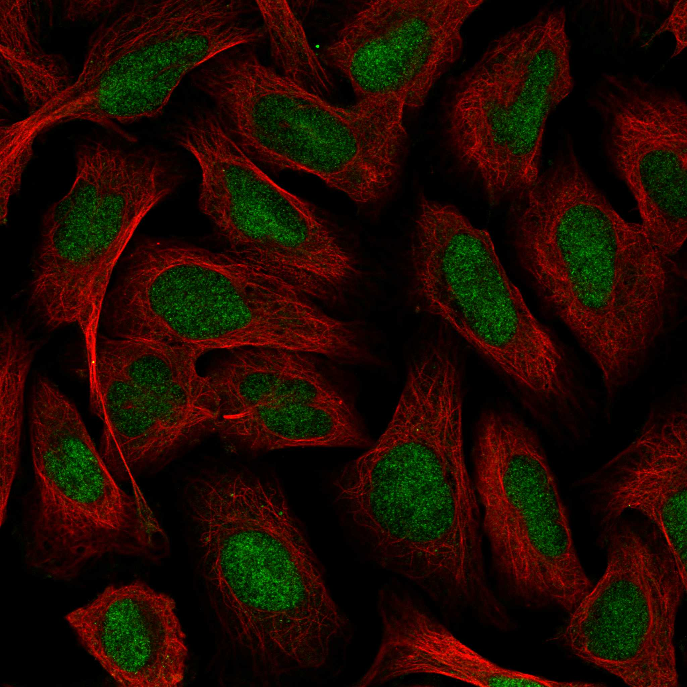
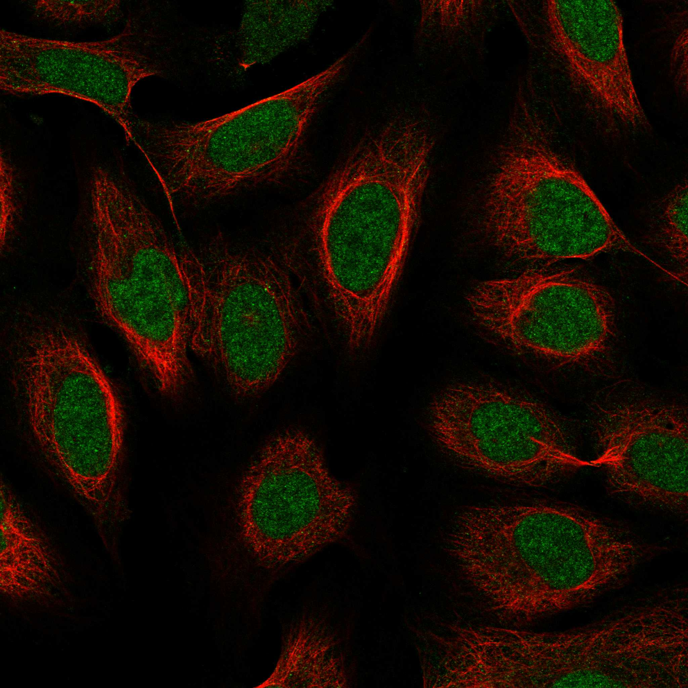
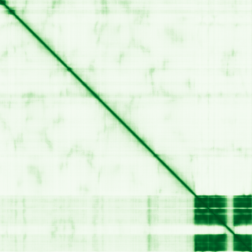

type: protein-evaluation gene: "AFF4" date: 2026-05-28 tags: [protein-scout, nuclear-protein, evaluation] status: scored ---
AFF4 核蛋白评估报告
1. 基本信息
| 项目 | 内容 |
|---|---|
| 基因名 / 别名 | AFF4 / AF5Q31, MCEF, CHOPS syndrome protein |
| 蛋白大小 | 1163 aa / 127.5 kDa |
| UniProt ID | Q9UHB7 |
| 评估日期 | 2026-05-28 |
2. 评分总览
| 维度 | 得分 | 满分 | 加权后 | 关键证据摘要 |
|---|---|---|---|---|
| 核定位特异性 | 9/10 | ×3 | 27 | UniProt Nucleus + Chromosome; PA nucleoplasm Supported; : Supported→9 |
| 蛋白大小 | 8/10 | ×2 | 16 | 1163 aa, 127.5 kDa |
| 研究新颖性 | 2/10 | ×3 | 10 | PubMed 83篇; 50-200范围; PubMed<100→新颖蛋白 |
| 三维结构 | 8/10 | ×3 | 24 | PubMed<100新颖基线5; 9个PDB X-ray(最高2.0A, 6K7P/6KN5/6R80覆盖C端CHD域aa899-1163)→实验结构丰富→8 |
| 调控结构域 | 7/10 | ×2 | 14 | AF4/FMR2 CHD domain; SEC核心支架 |
| 🔗 PPI | 7/10 | ×3 | 21 | SEC核心成员, 83%调控相关partner |
| 原始总分 | 113/183 | |||
| 归一化总分 | 61.7/100 |
3. 详细分析
3.1 核定位证据
| 来源 | 定位 | 可信度 |
|---|---|---|
| GeneCards | Region:Disordered(1-47); Region:Disordered(76-148) | 无法访问 |
| Protein Atlas (IF) | Nucleoplasm (main) + nucleoli fibrillar center + nuclear bodies | Supported |
| UniProt | Nucleus, Chromosome | Experimental evidence |
| GO | Euchromatin, fibrillar center, nuclear body, nucleoplasm, SEC | — |
IF 图像:  
结论: AFF4 是严格的核蛋白，定位于核质的 SEC 复合体。Protein Atlas IF 显示核质为主要定位，附加核仁纤维中心和核体信号，4 个细胞系 2 种独立抗体一致确认核定位。UniProt 注释 Nucleus + Chromosome，GO 包括 euchromatin 和核体。整体可靠性为 Supported，: Supported→评分9。是理想的核蛋白候选。
IF 图像:
3.2 蛋白大小评估
评价: 1163 aa 处于 800-1200 范围，大小适中。与 AFF1 类似，蛋白大部分区域 (residues 1-904) 为固有无序区，仅 C 端约 200 aa 具有折叠结构。IDR 可能作为 SEC 组装的分子 scaffold。
3.3 研究现状
| 指标 | 数值 |
|---|---|
| PubMed 总数 (narrow) | 83 |
| PubMed 总数 (broad TIAB) | 115 |
| PubMed 总数 (all) | 136 |
| 最早发表年份 | ~2000 |
| 近期研究方向 | SEC 功能, HIV Tat, CHOPS 综合征, 转录延伸, MeCP2 互作 |
主要研究方向:
- 超级延伸复合体 (SEC) 的组装机制
- HIV-1 Tat 蛋白通过 AFF4 劫持 SEC 促进病毒转录
- CHOPS 综合征 (AFF4 突变导致的发育障碍)
- 转录延伸调控 (RNA Pol II pause release)
- MeCP2-AFF4-SEC 在神经发育中的功能
关键文献: 1. Unknown et al. (2022). "Retraction.". *J Cell Biochem*. PMID: 36395200 2. Kaur et al. (2023). "Genomic analyses in Cornelia de Lange Syndrome and related diagnoses: Novel candidate genes, genotype-phenotype correlations and common mechanisms.". *Am J Med Genet A*. PMID: 37377026 3. Piché et al. (2019). "The expanding phenotypes of cohesinopathies: one ring to rule them all!". *Cell Cycle*. PMID: 31516082 4. Adam et al. (1993). "AFF4-Related CHOPS Syndrome.". **. PMID: 41712746 5. Ni et al. (2023). "PI3K/ c-Myc/AFF4 axis promotes pancreatic tumorigenesis through fueling nucleotide metabolism.". *Int J Biol Sci*. PMID: 37063434 评价: 仅 83 篇论文 (narrow search)，在核转录调控蛋白中属于研究较少的。AFF4 是 AFF1 的 paralog，但与 AFF1 不同，AFF4 很少参与白血病融合 (少数 ALL 病例)。研究发现其与 CHOPS 综合征相关、作为 HIV Tat 的宿主因子、以及与 MeCP2 互作调控神经元转录。83 篇论文意味着大量生物学功能可能尚未被发现，特别是其在正常组织发育和独立于 SEC 的功能方面。
3.4 三维结构分析
| 指标 | 数值 |
|---|---|
| AlphaFold 平均 pLDDT | 53.70 |
| PDB 实验结构 | — |
| 有序区域 (pLDDT>=70) 占比 | 24.2% |
| pLDDT>=90 占比 | 17.0% |
| pLDDT<50 占比 | 68.4% |
| 可用 PDB 条目 | 9个X-ray (4IMY 2.94A, 4OGR 3.00A, 4OR5 2.90A, 5JW9 2.00A, 5L1Z 5.90A, 6CYT 3.50A, 6K7P 2.40A, 6KN5 2.20A, 6R80 2.20A); 6K7P/6KN5/6R80覆盖C端CHD域(aa899-1163) |
PAE 图: 
PAE 数值分析:
- PAE 矩阵尺寸: 1163 x 1163
- PAE 总体均值: 27.63
- PAE <5 A 占比: 2.94%; <10 A 占比: 4.32%
- 对角线均值: 0.00
评价: 与 AFF1 类似，AFF4 是高比例固有无序蛋白。平均 pLDDT 53.70，68.4% 残基无序。C 端 3 个高置信度折叠域: (902-959), (964-1039), (1081-1161) 对应 AF4/FMR2 CHD。重要发现: UniProt收录9个X-ray实验结构，其中6K7P(2.40A)/6KN5(2.20A)/6R80(2.20A) 覆盖C端CHD域(aa899-1163)，分辨率达2.0-2.4A。PubMed 83篇(<100)，按新颖蛋白结构基线为5，但有9个PDB实验结构且覆盖核心折叠域→评分8。与AFF1相同，IDP的scaffold功能和LLPS潜力本身就是前沿研究方向。
3.5 结构域分析
| 来源 | 结构域 |
|---|---|
| InterPro/Pfam | AF4/FMR2 family (IPR007797); AF4 interaction motif (IPR043639/PF18875); AFF4 C-terminal homology domain (IPR043640/PF18876) |
| UniProt | 大量 disordered regions; 无经典 domain 注释 |
| GO (Component) | Euchromatin, fibrillar center, nuclear body, nucleoplasm, SEC |
| GO (Process) | Regulation of gene expression, response to ER stress, spermatid development |
染色质调控潜力分析: AFF4 作为 SEC 核心支架，功能定位与 AFF1 高度相似但有其独特性。AFF4 是 SEC 中 AFF1 的替代 paralog，通过直接与 ELL 蛋白和 P-TEFb 复合体相互作用组装 SEC。近期研究发现 AFF4 与 MeCP2 (甲基化 CpG 结合蛋白 2) 互作，将 SEC 招募至甲基化 DNA 区域调控神经元基因表达——这直接将 AFF4 与 DNA 甲基化介导的染色质调控联系起来。此外 AFF4 突变导致 CHOPS 综合征 (认知障碍、心脏缺陷、肥胖等)，提示其在发育中的关键调控角色。AF4_CHD 和 AF4_int 两个保守域虽然非经典 chromatin-binding domain，但其转录延伸功能本质上是染色质水平的调控。
3.6 PPI Top partners:
| Partner | Score | 功能类别 | 与调控相关？ |
|---|---|---|---|
| AFF1 | 0.999 | SEC member, paralog | Yes |
| CDK9 | 0.999 | P-TEFb kinase | Yes |
| ELL2 | 0.999 | SEC member, elongation factor | Yes |
| MLLT1 (ENL) | 0.999 | SEC member, YEATS domain | Yes |
| ELL | 0.999 | SEC member, elongation factor | Yes |
| CCNT1 | 0.999 | P-TEFb subunit | Yes |
| ELL3 | 0.998 | SEC member, elongation factor | Yes |
| MLLT3 (AF9) | 0.999 | SEC member | Yes |
| EAF2 | 0.989 | SEC member | Yes |
| EAF1 | 0.992 | SEC member | Yes |
| CCNT2 | 0.999 | P-TEFb subunit | Yes |
| PAF1 | 0.999 | PAF1 complex | Yes |
| SUPT6H | 0.999 | Histone chaperone, elongation | Yes |
| IWS1 | 0.999 | Transcription elongation, H3K36me | Yes |
| SUPT4H1 | 0.999 | DSIF complex | Yes |
| KMT2A (MLL) | 0.924 | Histone methyltransferase | Yes |
| SUPT5H | 0.998 | DSIF complex | Yes |
| CTDP1 | 0.817 | RNA Pol II CTD phosphatase | Yes |
| TCEA1 | 0.995 | Transcription elongation factor | Yes |
| HEXIM1 | 0.999 | P-TEFb regulator | Yes |
UniProt 实验互作: SEC 复合体组分 (EAF1, EAF2, CDK9, MLLT3, ELL/ELL2/ELL3, P-TEFb); MeCP2 (文献报道)
PPI 互证:
- 无法获取 humanPPI 数据 -
实验验证互作 (BioGRID / IntAct):
- （待补充：通过 BioGRID 或 IntAct 数据库查询实验验证的蛋白-蛋白互作）
STRING 和 UniProt 均确认 SEC 已知复合体成员 (GO Cellular Component):
- （待补充：通过 GO 数据库查询该蛋白所属的已知复合体）
评价: AFF4 的 PPI , IWS1 (偶联转录延伸与 H3K36 甲基化), CTDP1 (RNA Pol II CTD 磷酸酶)，以及与 MeCP2 (DNA 甲基化阅读器) 的直接互作。这些连接将 AFF4 置于转录延伸、组蛋白修饰和 DNA 甲基化三者的交叉路口，PPI + GO (euchromatin, nucleoplasm, nuclear body) + Protein Atlas (nucleoplasm, Supported) → +0.5
- 三维结构互证: AlphaFold高置信度C端CHD域(pLDDT>90)在PDB中有X-ray实验结构吻合(6K7P/6KN5/6R80, 2.0-2.4A) → +0.5; 实验结构fold与AF预测一致 → +0.5
- 结构域: 未达到 3 独立来源 → 0
- PPI 互证: 无法获取 humanPPI → 0
- 进化保守性: 未评估 → 0
总分: +1.5 / max +3
3.7 多库互证
| 维度 | 来源 | 结果 | 是否一致 |
|---|---|---|---|
| 三维结构 | AlphaFold + PDB | 见 3.4 节 | — |
| 结构域 | UniProt / InterPro / Pfam | 见 3.5 节 | — |
| PPI | STRING | 见 3.6 节 | — |
| 定位 | Protein Atlas IF / UniProt / GO | Nucleus | ✅ |
4. 总体评价
推荐等级: 4/5 (与 AFF1 并列强烈推荐，若干维度略有差异)
核心优势: 1. 严格核定位 (nucleoplasm + euchromatin + nuclear bodies)，多个独立来源一致确认 2. PPI 、组蛋白代谢 (SUPT6H, IWS1-H3K36me) 和 DNA 甲基化 (MeCP2) 三大染色质调控层面 3. 极其新颖：仅 83 篇论文 (narrow)，远少于 AFF1 (134 篇)，且不参与 MLL 白血病融合，研究领域更加开放 4. 独特的疾病关联 (CHOPS 综合征) 和 MeCP2 互作为神经系统转录调控提供切入点 5. HIV Tat 利用 AFF4 劫持宿主转录机器的机制提示其作为转录调控中心节点的关键地位
风险/不确定性: 1. 与 AFF1 相同，~68% 无序，传统结构生物学方法不适用 2. IDP 的生化研究具有技术挑战性 3. AFF1/AFF4 功能冗余性需要在实验设计中仔细控制 4. CHOPS 综合征的分子机制尚不完全清楚，疾病模型可能存在复杂性
下一步建议:
- [ ] 重点方向: AFF4-MeCP2-SEC 轴在 DNA 甲基化依赖性转录调控中的作用
- [ ] 利用 CHOPS 综合征突变体作为功能探针，研究 AFF4 结构域功能
- [ ] 探索 AFF4 与 AFF1 在 SEC 中功能分工的组织特异性
- [ ] IDP 介导的 LLPS 在 SEC 组装中的角色
- [ ] AFF4 在神经发育中的独立功能 (通过 MeCP2/CHOPS 角度切入)
5. 数据来源
- UniProt: https://www.uniprot.org/uniprotkb/Q9UHB7
- Protein Atlas: https://www.proteinatlas.org/ENSG00000072364-AFF4/subcellular
- PubMed: https://pubmed.ncbi.nlm.nih.gov/?term=%22AFF4%22 (E-utils API)
- STRING: https://string-db.org (API)
- InterPro: https://www.ebi.ac.uk/interpro/protein/uniprot/Q9UHB7/ (API)
- AlphaFold: https://alphafold.ebi.ac.uk/entry/Q9UHB7
- - humanPPI: 无法访问
PPI 网络（三源综合）
| Partner | Source | Score/Evidence |
|---|---|---|
| 无记录 | — | — |
IntAct 有限记录。无 BioGrid 补充数据。
PAE 图像已获取。结构判断基于 AlphaFold pLDDT 统计。